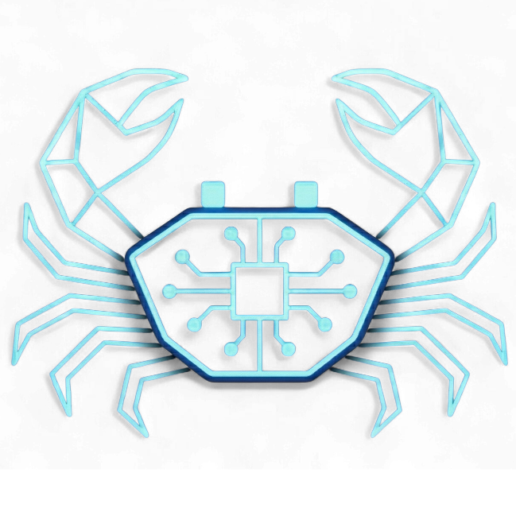

Инструкция по настройке VРN
Если у вас не работает телеграм и вы не можете купить через бота подписку, напишите в поддержку, и вам предоставят временный доступ для работы с ботом
❓ F.A.Q. (Вопросы)
Есть ли пробный период у вашего сервиса?
Да, конечно! Мы предоставляем бесплатный тестовый период, чтобы вы могли лично оценить скорость и стабильность работы перед покупкой.
Пробная подписка выдается на 3 дня и включает 2 ГБ трафика с возможностью одновременного подключения на 1 устройстве. Этого времени и объема данных более чем достаточно для комфортного серфинга и тестирования.
Зачем мне использовать Telegram-бота, если я могу купить доступ напрямую через поддержку?
Транзитные ключи от поддержки — это лишь временная мера для первоначальной настройки. Полноценная работа через Telegram-бота необходима для вашего же удобства.
Во-первых, бот — это ваш полноценный личный кабинет. В нем вы получаете удобный доступ к управлению своей подпиской: можете в любой момент посмотреть остаток трафика, узнать дату окончания тарифа и продлить доступ в пару кликов.
Во-вторых, это автоматизирует процесс выдачи. Пользователи могут оплатить тариф и получить персональный ключ моментально, без ожидания ответа оператора.
Обратите внимание: в ближайшее время на этом сайте появится специальная MTProto-ссылка. Это встроенный протокол Telegram: вам достаточно будет просто кликнуть по ней, и ваш мессенджер моментально подключится к нашим серверам для комфортного перехода в бота.
Что значит "По правилам / Глобальный / Прямой" в приложении FLClashX?
Это режимы маршрутизации. Они указывают вашему VРN-приложению, как именно нужно сортировать интернет-трафик.
- По правилам (Rule / Routing) — это «умный» режим, который используется по умолчанию. Приложение само разделяет трафик по заложенным в него правилам: российские сайты (банки, Госуслуги, маркетплейсы) открываются напрямую через вашего провайдера, а соцсети и зарубежные сервисы идут через VРN. Это самый удобный режим на каждый день, чтобы ничего не ломалось.
- Глобальный (Global / Proxy) — режим полного проксирования. Абсолютно весь интернет-трафик на вашем устройстве принудительно отправляется через VРN-сервер за границу. Используйте его, если вам нужно скрыть свой реальный IP-адрес абсолютно для всех сайтов без исключения. Важно: в этом режиме многие российские банковские приложения могут не работать.
Обратите внимание: после включения этого режима зайдите во вкладку "Прокси" и убедитесь, что в появившейся группе Global выбрана группа CyberCrab VРN (Selector), а не DIRECT. - Прямой (Direct) — режим полного обхода VPN. Весь трафик идет напрямую, минуя защищенный туннель. Фактически, VРN перестает маскировать ваш IP-адрес и открывать доступ к ресурсам, даже если само подключение активно. Обычно этот режим нужен только разработчикам для тестирования сети.
Почему в списке несколько серверов (Apple, Google, Microsoft)?
Какой выбрать?
Все эти подключения ведут на один и тот же супербыстрый сервер. Разница — только в типе маршрутизации трафика.
Современные системы анализа сетей могут ограничивать нестандартный трафик. Чтобы обеспечить стабильность, наше приложение маскирует ваш интернет под посещение популярных ресурсов:
- Apple — маршрутизация через сервера Apple.
- Google — имитация загрузки данных от Google.
- Microsoft — маскировка под обычное обновление Windows.
Что делать: Подключайтесь к любому из них! Если вдруг ваш оператор связи решит временно ограничить один из маршрутов, вы просто выбираете в списке другой — и сеть снова работает стабильно. Это ваша личная гарантия бесперебойного доступа.
📑 Оглавление
📖 Пошаговая инструкция по подключению
Этап 1: Временное подключение (Если нет доступа к Telegram)

После успешной настройки постоянной подписки временное приложение Incy можно удалить, чтобы избежать путаницы. Однако вы можете оставить его в качестве основного VРN-клиента, так как оно доступно на всех платформах. В этом случае, после добавления новой подписки через бота, просто не забудьте удалить старый временный профиль.
Этап 2: Оформление пробного периода и настройка


📺 Перенос ссылки на Android TV (LocalSend)
Используйте этот способ, чтобы не вводить длинную ссылку с пульта.
Если у вас Android TV, установите приложение LocalSend на телевизор и на смартфон (или компьютер), с которого будете передавать ссылку подписки.
Скачать: localsend.org/download
Оба ваших устройства должны быть в одной Wi-Fi сети. Вы можете со смартфона раздать Wi-Fi (точка доступа) и подключить Android TV к этой сети.
Зайдите в приложение LocalSend на смартфоне и нажмите кнопку «Вставить».
Выберите устройство (ваш Android TV), на которое нужно передать ссылку.

На телевизоре примите входящий файл и скопируйте полученный текст.
Откройте скопированную ссылку в браузере телевизора и перейдите на
Этап 2, шаг 9 📖 Пошаговой инструкции по подключению , ИЛИ просто откройте установленное VРN-приложение (V2Raytun или FLClashX) и вставьте ссылку туда, как описано ниже.
Если на телевизоре установлен V2Raytun

Если на телевизоре установлен FLClashX

Дополнительно: Настройка умной маршрутизации для v2raytun
Для остальных клиентов эта функция работает по-умолчанию
Включение этого правила указывает приложению автоматически сортировать ваш интернет-трафик. Зарубежные ресурсы и социальные сети пойдут через защищенный VРN-туннель, а российские сайты, маркетплейсы и банковские приложения (например, Сбербанк, Т-Банк, Госуслуги) будут работать напрямую. Это избавит вас от необходимости постоянно включать и выключать VРN — всё будет работать стабильно и без сбоев.